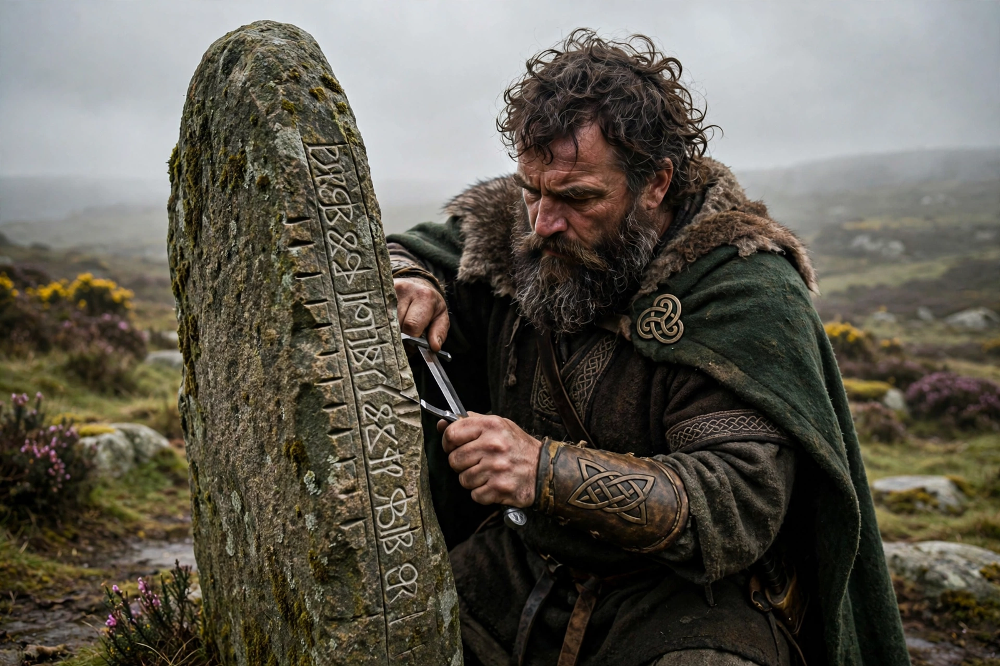

From Wikipedia, the free encyclopedia
| Ogma | |
|---|---|
| Affiliation | Irish mythology; champion of the Tuatha Dé Danann, god of eloquence and learning |
| Invention | The Ogham alphabet, cut first on birch |
| Depicted as | A mighty warrior-scholar with chains from his tongue (in his Gaulish form Ogmios) |
| Brothers | The Dagda and Lugh (of the leading Tuatha) |

Ogma (Old Irish Ogma; Gaulish Ogmios) is the champion of the Tuatha Dé Danann in Irish mythology, a god of eloquence, learning and physical strength in one — the honey-mouthed strongman. Tradition credits him with the invention of the Ogham alphabet, the notched letters cut along the edges of standing stones (the earliest written Irish), devised, says the Auraicept na n-Éces, as a secret sign-language of the learned. In the Second Battle of Mag Tuired he is the Tuatha's champion, humiliated under the Fomorian occupation carrying firewood, then rising to win back the Dagda's harp from the fleeing enemy and to fight in the battle's front rank.
His Gaulish form gives the tradition's strangest image: Lucian, the 2nd-century Greek satirist, describes a Gaulish painting of Ogmios as an aged Heracles — lion skin, club and bow — drawing a crowd of happy followers by fine gold and amber chains running from the tip of his tongue to their ears. The Gauls explained that eloquence, ripened by age, binds men more surely than force: the old man's words lead the willing. Irish Ogma, inventor of letters, is the same god in his other hand: the word as weapon, the champion whose strength and speech are one gift.
Celtic mythology · Lugh · Danu · Bragi (fellow eloquence god)